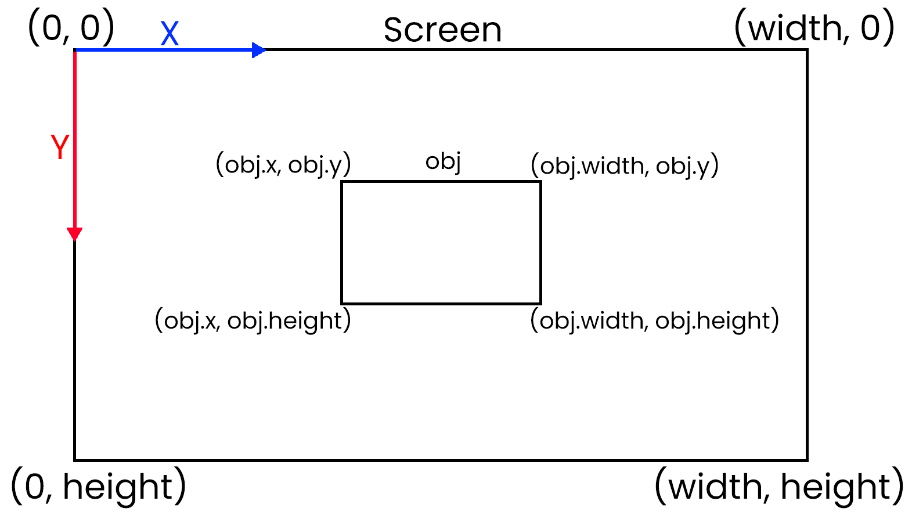

Pong
Pong este un joc video de tip arcade care simulează un joc de tenis de masă, creat de Atari și lansat în anul 1972. Este unul dintre primele jocuri video de tip arcade; acesta a fost creat de Allan Alcorn ca un exercițiu de la co-fondatorul Atari Nolan Bushnell, dar Bushnell a fost surprins de calitatea jocului și a decis să lanseze jocul.
Pong a fost primul joc video care a avut parte de succes. Curând după lansarea jocului, multe companii au început să producă jocuri care imitau gameplay-ul acestuia. În cele din urmă, competitorii au început să lanseze jocuri video care deviază de la formatul original al jocului, care a influențat Atari să treacă de Pong și să producă jocuri mai inovative, formând astfel industria jocurilor video.

Mașină arcade cu Pong
Gameplay
Pong este un joc 2D care simulează un joc de tenis de masă. Jucătorii controelază paletele ca să paseze mingea de la unul la celălalt. Acesta se poate juca cu un alt jucător, care controlează paleta de pe partea opusă sau cu un AI. Scopul este să obții zece puncte înaintea adversarului, pe care le primești când celălalt jucător nu reusește să paseze mingea, aceasta trecând de paleta lui.
Concepte importante
-
Sistemul de coordonate bidimensional
Majoritatea jocurilor 2D au toate obiectele reprezentate în sistemul de coordonate bidimensional. În LOVE2D, acest sistem este puțin diferit de cel întâlnit în matematică, deoarece Y ia valori pozitive când este sub origine și valori negative când este deasupra originii. Originea, în contextul jocurilor, este punctul din stânga sus al ecranului.
Reprezentarea sistemului de coordonate in LOVE2D
-
Detectarea coliziunilor
Pentru detectarea coliziunilor dintre minge și palete sau marginile ecranului se folosește conceptul de Axis-Aligned Bounding Box (AABB). AABB-ul este un dreptunghi care cuprinde în întregime un obiect în spațiu, iar laturile dreptunghiului sunt aliniate cu axele de coordonate (dreptunghiurile nu pot fi rotite). Pentru determinarea poziției sau mărimii dreptunghiului, sunt folosite punctele de coordonate, lungimea și lățimea obiectului.
În contextul jocurilor 2D, detectarea coliziunilor dintre 2 obiecte folosind AABB-urile se face verificând dace dreptunghiurile celor două obiecte se intersectează. Pentru a face asta, verificăm dacă valorile coordonatelor colțului din stânga sus al unui dreptunghi sunt mai mari decât valorile coordonatelor colțului din dreapta jos al celuilalt dreptunghi, și similar verificăm dacă valorile coordonatelor colțului din dreapta jos al unui dreptunghi sunt mai mici decât valorile colțului din stânga sus al celuilalt dreptunghi. Dacă ambele condiții sunt adevărate, atunci între cele 2 obiecte a avut loc o coliziune.
-
AI-ul
AI-ul,folosindu-se atât de coordonatele și mărimea paletei sale, cât și de coordonatele și viteza mingii, folosește un algoritm pentru a calcula unde mai exact se va afla mingea când ajunge la paleta AI-ului (este calculată doar coordonata y, din moment ce paleta AI-ului nu se poate mișca orizontal). Algoritmul funcționează astfel:
AI-ul calculează cât timp îi va lua mingii să ajungă din poziția sa până la paletă, folosind ecuația vitezei și viteza mingii pe direcția x.
Calculează coordonata y a mingii când ajunge la paletă folosind iar ecuația vitezei, timpul calculat și viteza pe direcția y.
Deoarece coordonata calculată poate să depășească înălțimea ecranului, algoritmul adaugă repetat, iar apoi scade înălțimea ecranului din coordonata y până când aceasta este între 0 și înălțimea ecranului.
-
Nu în ultimul rând, se verifică dacă în total numărul de scăderi și adunări este impar, iar dacă această condiție este adevărată, coordonata finală a mingii este înălțimea ecranului, din care se scade coordonata y calculată. Această condiție ține cont de faptul că mingea se lovește de partea de sus sau de jos a ecranului, care schimbă direcția vitezei pe axa y.
Dacă nu am executa ultimul pas, AI-ul ar crede că mingea va ajunge undeva deasupra ecranului